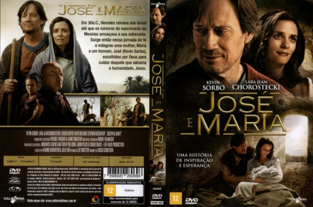

José e Maria (2017)


Avaliação (TMDb):


5.0/10 (6 votos)
Avaliação (Usuário):
Outro Título:Joseph and Mary
País:Canada, 82 minutos
Idiomas falados:Inglês, Português
Gênero(s):Drama
Diretor(s):Roger Christian
Codec:MPEG-2 (DVD)
Número: 3025
Sinopse:
Em 30a.C., Herodes reinava sobre Israel até que os rumores do nascimento do Messias ameaçava a sua soberania. Surge então nessa jornada de fé e milagres uma mulher, Maria e um homem, José (Kevin Sorbo), escolhidos por Deus para cuidar daquele que salvaria a humanidade, Jesus.
Elenco:
Lawrence Bayne, Lara Jean Chorostecki, Steven McCarthy, Joseph Mesiano, Kevin Sorbo
Tipo de mídia: DVD5,
Legendas: Português
Alugado: Não
Tela: 16:9 Widescreen